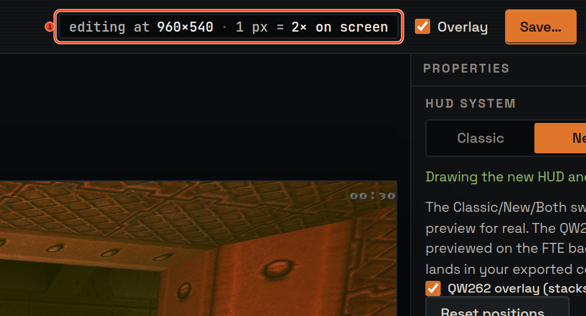
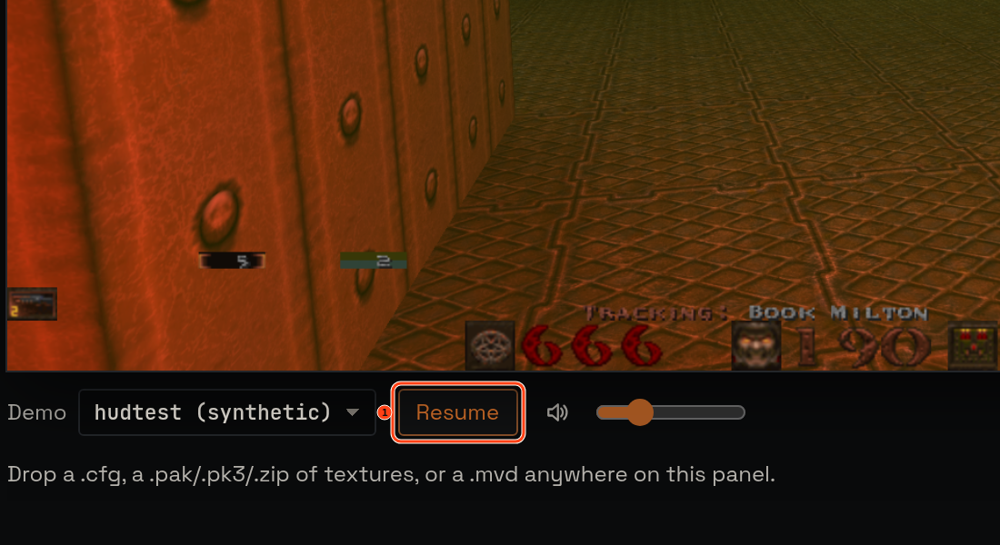

Release 1 · 2026-08-04 · Epic #39
Trust the geometry
ezHUD now follows the window you are editing in, tells the truth about every pixel, and lets you pause the demo while you work.
The editor finally follows your window
Resize the browser and the game view grows and shrinks with it, while every overlay handle stays exactly on its element. Before this release the game view silently stayed at its boot size, leaving a small frozen picture on a big monitor and subtly misplaced handles after a resize.

Pause the demo while you edit
A Pause button now sits next to the volume control. Pause, line up your HUD against a quiet scene, then resume. The button always shows what the engine is actually doing: pause from the console and it flips by itself; use a backend that cannot pause and the control says so instead of pretending.

Sharper resolution honesty
The engine reports both its virtual console size and the true pixel size of the picture. The “editing at … · 1 px = N× on screen” readout—and everything built on it—can no longer drift from reality.
Sturdier ground for every future change
Each release is now gated by a 12-cell geometry matrix against the real engine: element containment, resize proportionality with a measured non-fake ratio, edge alignment, and byte-identical config round-trips. A session log, available with F9, turns “something felt off” into a report you can copy and share.
Your configs do not change. Exports remain byte-compatible ezQuake configs, and every line you did not touch still survives byte-for-byte.